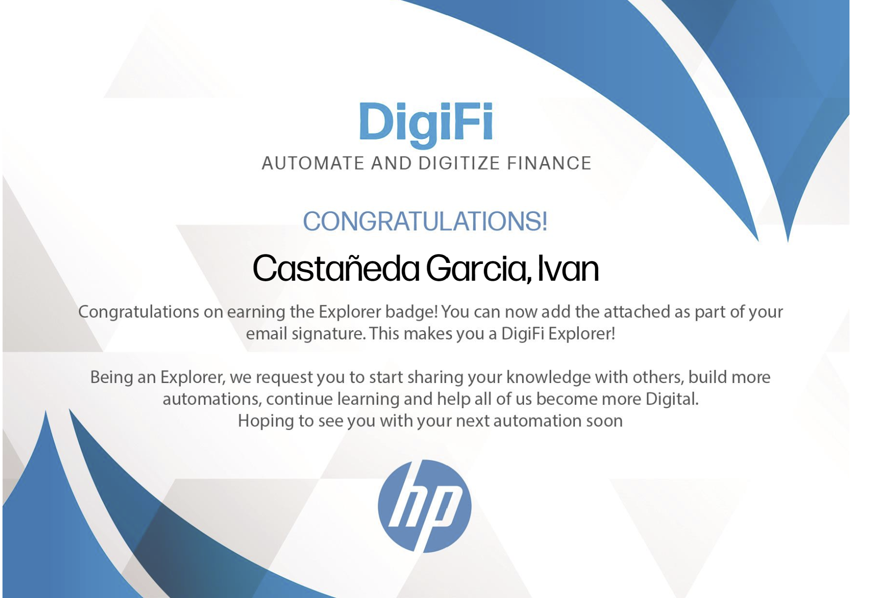

Ivan Castañeda's Resume

Summary
I am currently a cost accounting analyst at IBM,
I have 6 years of experience in the finance area developing different types of skills,
I like to learn about new technologies and tools that serve to optimize times and do repetitive tasks in a simpler way,
currently I am learning web development, it is an area that interests me a lot and I hope to continue developing my skills in this topic
and I would like to be able to work on something related to IT in the future.
Work Experience
-
Cost accounting analyst
IBM oct. 2023 - Current
- Periodic review of actuals and forecast (variance accounts).
- Daily Actuals (GL) review to identify variances.
- Inventory count and audit.
- Journal Entries
- End of month activities.
- Liabilities review and correct allocation by PC and account.
- Constant communication with ERAS team to ensure PN correct set up.
- Inventory revaluation
- Meetings with managers and controllers (Checkpoints)
- SAP GUI diferent tx.
- Part number analisys price variations.
- Material master maintenance (SAP).
-
Cost Accountant II
Flex Jan. 2023 - oct. 2023
- Periodic review of Profit and Loss (P&L), What if.
- Trial Balance analysis (Actuals).
- Conciliation, analysis and review of sales by project.
- Reconcile Balance sheet accounts to identify variances.
- Audit of cycle counts.
- Journal Entries
- End of month activities.
- Recoveries, EDM, Material loss, Freight in-out and other accounts review.
- GL accounts request
- Constant communication with PM
- PO, PR, Billing review and approval
- Meetings with other areas, including direct operations, to coordinate the correct allocation of accounts and expenses.
- System I use, BaaN, BPC, Onestream
-
AMS Front Office Finance Analyst
HP Inc. Jan. 2022 - Jan. 2023
- Puerto Rico and Chile supplier invoices receipt.
- Validate invoices based on the PO number, amount, region, project, and date.
- Invoice parking within SAP (MIR7, MIR4, FV60, FV65, ME23N).
- RPA development with UiPath studio x.
- Creation and presentation of vendor pdf reader project with studio x (Not OCR).
- Key vendor transition from Puerto Rico to Japan, closing all pending billing in Puerto Rico for that provider.
- Provide payment status and SAP Doc ids to the vendor.
- Continuous development of skills to automate repetitive processes.
- Invoice parking within the company system.
- Updating financial spreadsheets and reports with the latest available data.
- Providing assistance with payroll administration.
- Keeping records and documenting financial processes.
-
Sales and Logistic
Gaysa Tracto Accesorios agu. 2020 - Jan. 2022
- Conciliation of supplier account statements.
- Make supplier payments on time and in form.
- Carry out sales strategies to increase monthly income.
- Sale of different kinds of truck parts
- Find the best shipping option depending on the location of the client, trying to reduce the expenses of the same.
- Creation of bill of ladings in the different platforms based on the required region.
- Answer customer messages and keep the different existing social networks updated with valuable content.
- Special packaging for parcel shipments, avoids accidents and dents in the pieces.
-
OMS Vendor Support Team Lead
GEODIS SCO sept. 2018 - agu. 2020
- Supplier's account management.
- Conciliation of supplier account statements.
- Audit and validation of regular trade activity, presenting conciliation reports.
- Big data analysis for audit/validation for more than 10,000+ services weekly.
- Provide payment status to the suppliers, taking care to keep payments on time and as stipulated in the contract.
- Account number requisitions, according to the process assigned by the client, to protect the interests of the same.
- Prepare YTD financial report each week for US activity, using tools such as pivot tables, and dashboards.
- Support the AP and AR teams, making direct posts in the ERP (Microsoft Dynamics), refunds, and claims.
- Resolve financial disputes between suppliers and clients.
- Recovery of clients' overdue accounts.
-
Freight Billing and Validation Analyst
GEODIS SCO nov. 2017 - sept. 2018
- Supplier Invoices receipt.
- Audit and Analysis of supplier and customer freight charges, correct application of cost and rates depending on the regions, weight, distance, and service type.
- Take care of the client's interest by maintaining a good relationship with suppliers and scheduling weekly meetings to discuss pending or unusual issues with the stakeholders.
- Data analytics applied to identify, duplicates, rates errors, expired dates, wrong regions, and other types of constraints.
- Big data analysis for audit/validation for more than 1000+ services weekly.
- Elaboration of macros for validations and processing of invoices.
-
US Finance Data Entry
GEODIS SCO apr. 2017 - nov. 2017
- Capture vendor invoices.
- Create spreadsheets using Microsoft Excel to track vendor payments for USA.
- Desk Procedures preparation and update.
- Database Management.
- Information extraction within COBOL screens.
- Payment review within auditor's external application
-
Call Center Agent
Bonafont Jan. 2016 - mar. 2017
- Taking care of customer needs and providing helpful assistance.
- Complaints and requirement attention.
- Doubt resolution regarding quality issues.
- Quality complaint tracking.
Skills
- Microsoft Excel: ⭐⭐⭐⭐⭐
- Analisys: ⭐⭐⭐⭐
- Constant growth: ⭐⭐⭐⭐⭐
Education
- Universidad Tecnologica de Mexico / International Business / Unfinished
Awards and Certifications
- Aspectos básicos: Datos, datos, en todas partes.
- Fundamentos de la programacion: Diseño orientado a objetos.
- Fundamentos escenciales de la programacion.
- Artiicial intelligence Foundations: Machine Learning.
- Python Escential.
- HP Inc Digifi Explorer Certification.

Others